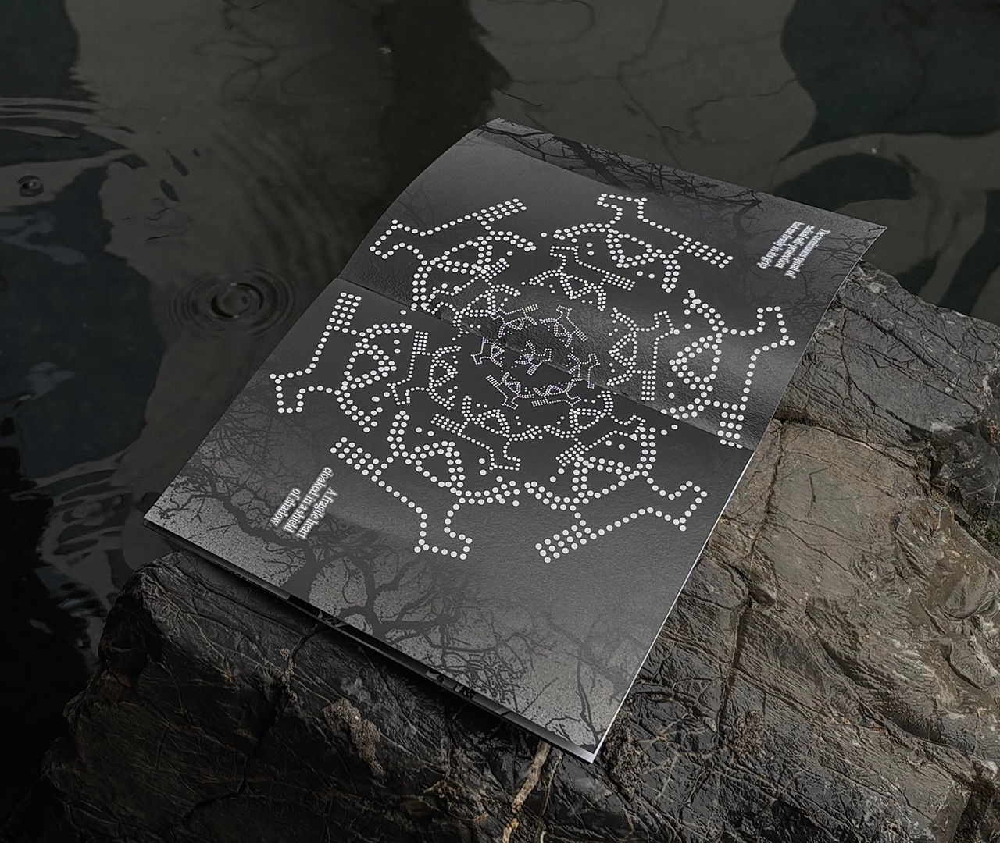

Welcome. This is Theongyn (Thao Nguyen).
Multidisciplinary Designer. Brand Designer @ Vinamilk.
I build visual narratives that connect emotionally with audiences
and deliver clear strategic value for brands.

Welcome. This is Theongyn (Thao Nguyen). Multidisciplinary Designer. Brand Designer @ Vinamilk. I build visual narratives that connect emotionally with audiences and deliver clear strategic value for brands.